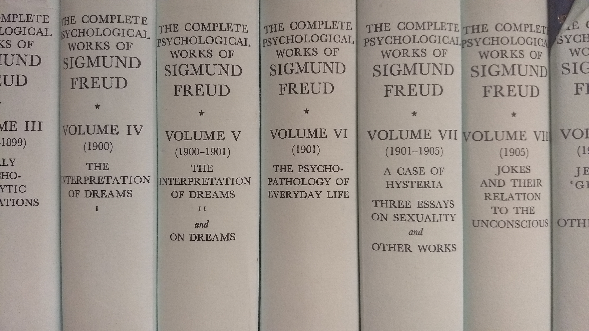

This page is an attempt at providing as extensive of a psychoanalytic bibliography as possible from the main schools and their prominent thinkers. Its a work in progress, and would be updated with time. Thus, don't consider it to be complete.
Some volumes of the Standard Edition of The Complete Psychological Works of Sigmund Freud, translated by James Strachey
An amazing compilation of most of Freud's works exist on the internet at www.freudcompleteworks.com. Here is a curated list of all his major works in the chronological order of when they were written:
- 1891, On Aphasia [tr. E. Stengel in 1953], International Universities Press
(German) 1891, Zur Auf/assung der Aphasien, Vienna
- 1895, Studies on Hysteria with Breuer, J. [tr. James Strachey in S.E II]Strachey, J. (1955) The Standard Edition of the Complete Psychological Works of Sigmund Freud, Volume II (1893-1895): Studies on Hysteria.
(German) 1895, With Breuer, J. Studien uver Hysterie, Vienna.
- 1900, The Interpretation of Dreams, [tr. James Strachey in S.E IV-V]Strachey, J. (1953) The Standard Edition of the Complete Psychological Works of Sigmund Freud, Volume IV (1900): The Interpretation of Dreams (First Part)
(German) 1900, De Traumdeutung, Vienna.
- 1901, The Psychopathology of Everyday Life, [tr. James Strachey in S.E VI]Strachey, J. (1960) The Standard Edition of the Complete Psychological Works of Sigmund Freud, Volume VI (1901): The Psychopathology of Everyday Life.
(German) 1901, Zur Psychopathologie des Alltagslebens, Berlin, 1904